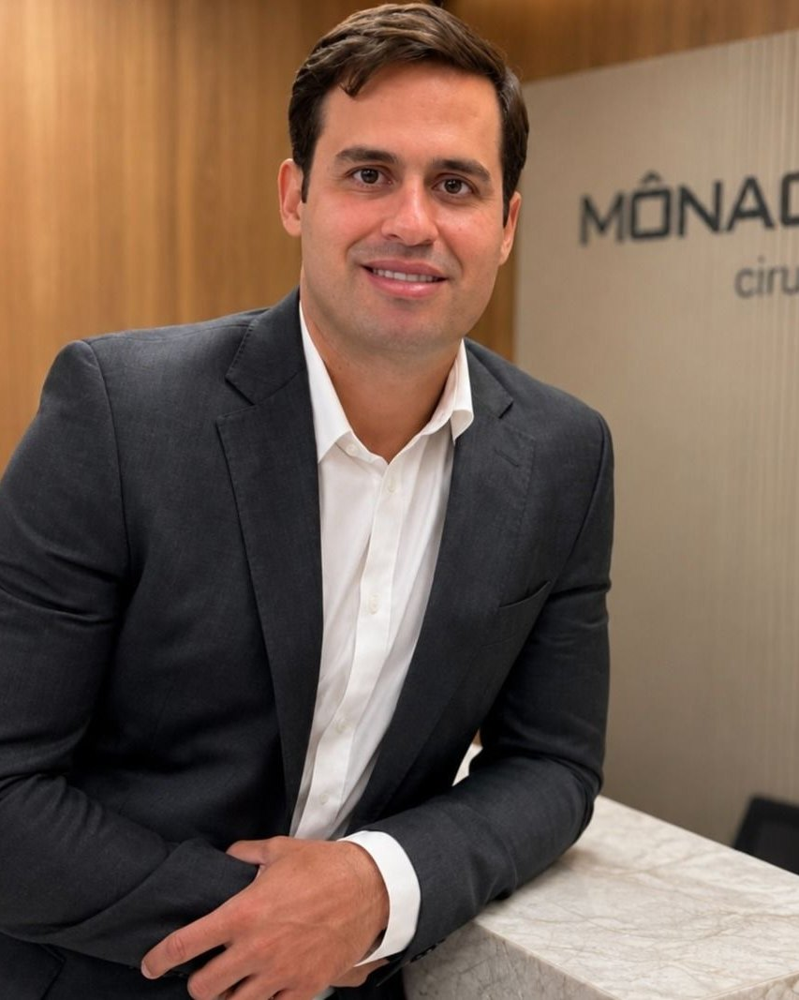
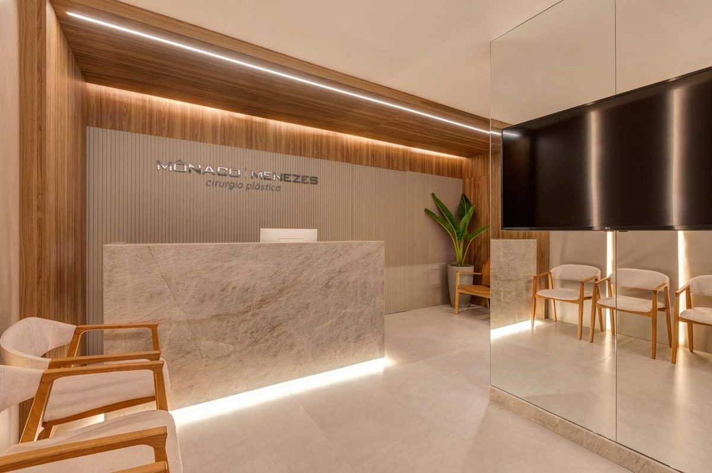
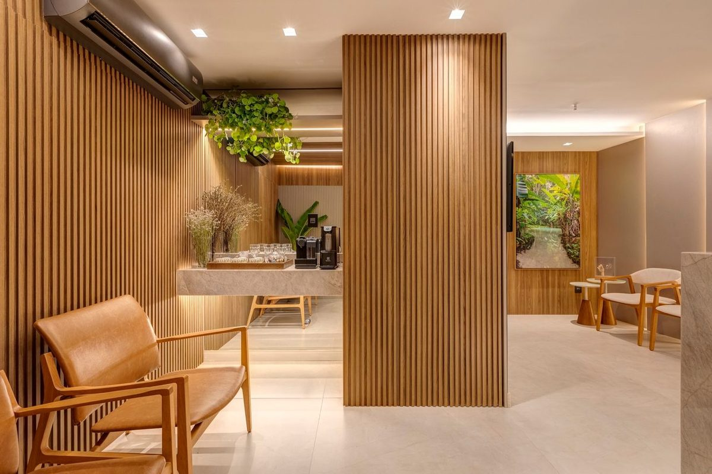

Cirurgião plástico · CRM-BA 22639 · RQE 14569
Cirurgia plástica da face e do corpo, planejada para cada história.
O Dr. Thomaz de Menezes concentra sua atuação no rejuvenescimento facial (deep plane facelift, pálpebras e sobrancelhas) e atua também no contorno corporal e nas mamas. Formado na UFBA, com residência no Hospital das Clínicas da USP.
- 5,019 avaliações no Google
- 358opiniões na Doctoralia
- SBCPmembro da sociedade

Por onde começar
O que trouxe você até aqui?
Flacidez no rosto e no pescoço
O que é o deep plane facelift e para quem ele pode ser indicado.
Rejuvenescimento facialOlharPálpebras pesadas ou caídas
Blefaroplastia, ptose palpebral e lifting de sobrancelha.
Pálpebras e sobrancelhasCorpoAbdômen, cintura e contorno
Abdominoplastia, lipoaspiração e diástase abdominal.
Contorno corporalMamasPrótese ou mamoplastia
O que avaliar antes de operar, inclusive os exames das mamas.
Cirurgia das mamasDeep plane facelift
O rosto tem camadas. A técnica trabalha nas mais profundas.
No lifting feito só na pele, é a pele que sustenta a tração. No deep plane, o cirurgião trabalha abaixo do SMAS, a camada músculo-aponeurótica da face, e reposiciona os tecidos da face e do pescoço a partir desse plano profundo.
“Em vez de atuar apenas na pele, a técnica reposiciona as estruturas profundas da face, respeitando a anatomia e buscando preservar a identidade de cada paciente.”Dr. Thomaz, na página da clínica · agosto de 2026Ler sobre rejuvenescimento facial
Esquema simplificado, só para orientação. A indicação é individual, definida em consulta.
Estudo contínuo
Nova York, Saint Louis e de volta a Salvador.
Em abril de 2025, o Dr. Thomaz fez uma imersão em cirurgia facial nos Estados Unidos. Na volta, falou sobre o deep plane à imprensa de Salvador. “Não se trata de uma técnica simples. Exige preparo, estudo contínuo e domínio anatômico”, disse ao Jornal O Candeeiro.
- Abril de 2025Nova YorkAcompanhou o trabalho do cirurgião David Rosenberg e seguiu sob mentoria de Steven Levine.Revista Yacht
- Abril de 2025Saint Louis, MissouriParticipou de curso com o cirurgião Mike Nayak, que se dedica ao deep plane facelift.Revista Yacht
- Maio de 2025SalvadorEntrevista à CBN Salvador sobre o deep plane facelift.Registro da entrevista
Trajetória
Formado na UFBA, treinado no Hospital das Clínicas da USP.
“Em 2018, retornei a Salvador com o propósito de oferecer uma cirurgia plástica moderna, segura e baseada em evidências científicas.” O texto é do próprio Dr. Thomaz, na apresentação da Doctoralia; as datas vêm dos certificados que ele publicou ali.
Formação, títulos e trabalhos- 2010Graduação em Medicina pela Universidade Federal da Bahia (UFBA)
- 2012–2014Residência em Cirurgia Geral na Faculdade de Medicina da USP
- 2014–2017Residência em Cirurgia Plástica na Faculdade de Medicina da USP
- 2017Título de especialista em Cirurgia Plástica pela AMB e pela SBCP
- 2017–2018Complementação especializada em Microcirurgia Reconstrutiva, FMUSP
- 2018Volta a Salvador, sua cidade natal
- 2022Inaugura a clínica no Edifício Vitraux, com o Dr. Franklin Mônaco

Nas palavras dele
“Acredito que cada paciente possui necessidades, expectativas e características únicas. Por isso, dedico tempo para compreender cada história e elaborar um planejamento cirúrgico individualizado […].”Dr. Thomaz, na apresentação da Doctoralia
Dermatocalázio tem como tratamento a blefaroplastia mesmo. Na avaliação inicial, caso tenha além disso uma ptose palpebral, podemos associar o tratamento desta ptose.
Resposta publicada pelo Dr. Thomaz na DoctoraliaA princípio, se seu exame de mama deu um BI-RADS 3, você precisa de uma avaliação do mastologista antes de operar.
Resposta publicada pelo Dr. Thomaz na DoctoraliaRecebi indicação do profissional Dr. Tomaz, gostei demais dos esclarecimentos quanto aos procedimentos, super detalhista.
Fui bem orientada no pré operatório e, no pós, recebi um acompanhamento atento e cuidadoso. A equipe é acolhedora, profissional e transmite muita confiança.
Muito esclarecedor, detalhista e verdadeiro. A consulta foi ótima!
Excelente profissional, extremamente empático e transparente. Sabe alinhar com o paciente as expectativas de forma realista […].
Dr Thomáz é super competente, detalha tudo minuciosamente nos mínimos detalhes.
O acompanhamento multidisciplinar (médico, fisioterapeutas e enfermeiras) é um conforto!
Desde a recepção, a equipe foi extremamente cordial, educada e prestativa. […] muito atencioso e detalhista nas explicações.
Excelente profissional. Muito atencioso e faz explicações detalhadas.
Profissional excelente e com equipe super atenciosa.
Gostei da consulta, foi bastante atencioso, claro e educado
Trechos de avaliações públicas, com nome abreviado. Na Doctoralia, os pacientes mais citam: “Atencioso durante a consulta”, “Explicações detalhadas” e “Ótimo consultório”.
Conteúdos
Publicações e entrevistas do Dr. Thomaz.
A harmonia entre face e pescoço
Por que o pescoço entra no planejamento do facelift, e o que muda ao atuar em planos mais profundos.
Ver a publicaçãoClínica Dr. Thomaz Menezes · agosto de 2026Naturalidade e técnica no facelift
“O objetivo não é transformar o rosto, mas devolver contornos que foram sendo modificados pelo envelhecimento.”
Ver a publicaçãoInstagram · julho de 2025Blefaroplastia, a cirurgia das pálpebras
O que a cirurgia das pálpebras remove, explicado pelo Dr. Thomaz.
Ver no InstagramCBN Salvador · maio de 2025Entrevista sobre deep plane facelift
Conversa no rádio sobre o deep plane facelift.
Ver o registroJornal O Candeeiro · maio de 2025Deep plane facelift em Salvador
Reportagem sobre a técnica, as indicações, a recuperação e os riscos, com falas do Dr. Thomaz.
Ler a reportagemSBCP Regional São Paulo · vídeoEntrevista com Dr. Thomaz Menezes
Entrevista publicada pela regional paulista da Sociedade Brasileira de Cirurgia Plástica.
AssistirConsultório
Centro Médico Empresarial Vitraux, sala 304.
Rua Sol Nascente, 43 · Centro Médico Empresarial Vitraux, sala 304 · Federação · Salvador – BA. Consultas com hora marcada, presenciais; a Doctoralia lista também teleconsulta.


Horário de atendimento
Horário publicado na ficha do Google. As consultas são com hora marcada: confirme o horário com a equipe.
Dúvidas frequentes
Perguntas comuns
Onde fica o consultório?
No Centro Médico Empresarial Vitraux, sala 304: Rua Sol Nascente, 43, Federação, Salvador. Na Doctoralia, o mesmo prédio aparece com o endereço “Rua Eduardo José dos Santos, 43, Edf. Vitraux, Sala 304”.
Quais cirurgias o Dr. Thomaz realiza?
Nas palavras dele: “Hoje, concentro minha atuação em cirurgias de rejuvenescimento facial - Deep plane facelifting, cirurgia das pálpebras e sobrancelhas. Além disso, atuamos em cirurgias do contorno corporal, como abdominoplastia, lipoaspiração e mamoplastia.” (Doctoralia)
O que é o deep plane facelift?
Uma técnica de lifting facial que trabalha abaixo do SMAS para reposicionar as estruturas da face e do pescoço, em vez de tracionar só a pele. A indicação é individual, definida em consulta. Veja a página de rejuvenescimento facial.
Existe consulta online?
O perfil do Dr. Thomaz na Doctoralia lista consulta por vídeo, além da presencial. Confirme com a equipe o formato mais adequado para o seu caso.
Aceita convênio?
Confirme com a equipe, pelo WhatsApp, as condições de atendimento, pagamento e reembolso.
Como agendar?
Pelo WhatsApp (71) 99933-2013, o número publicado na ficha do Google e na página da clínica.
Agende
Cada história pede um planejamento próprio.
Consultas com hora marcada no Centro Médico Empresarial Vitraux, sala 304, na Federação. Fale com a equipe pelo WhatsApp (71) 99933-2013.